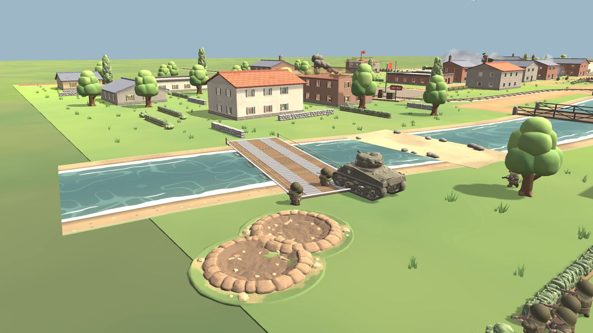
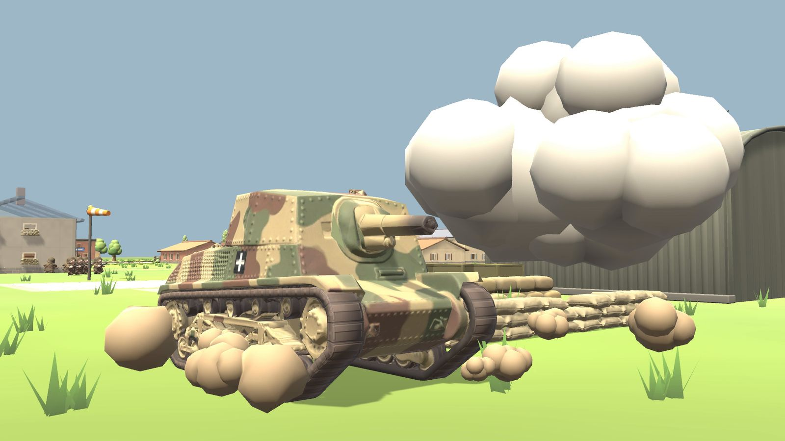

FRONTS 1944 has a home

FRONTS 1944 started in September as a prototype built in a day: cube soldiers, capture points, trenches and an AI opponent. Two and a half months later it has seven nations, house-to-house fighting, supply trains, weather, heavy bombers, paratroopers, team battles online and a Pacific theatre. It was time it had a home of its own.
The roadmap is public
The roadmap is an operations map of the whole project: every step of development, in the order it was taken or is planned. Point at an objective to bring it under fire, and open its dossier for more pictures and for what is still missing. Pictures marked Concept are targets for the look, not the game.
The road to Steam
The plan, in order:
- A Steam store page, so the full game can be wishlisted.
- A free demo on Steam, beside the one on itch.io.
- Open playtests of the real game through Steam Playtest, so testing happens on the same platform players will use.
- Steam Next Fest with the demo, and then the big launch.
Until the Steam page is up, the free demo on itch.io is the place to play. It is an earlier version: the next public release brings the new nations and the Pacific with it.

What comes next
The 0.5 release is going through its long checks: the full test pass, and multiplayer with the three new nations, on one PC and then online. After that, the roadmap's next objectives are guns that recoil right, three more nations and warships.